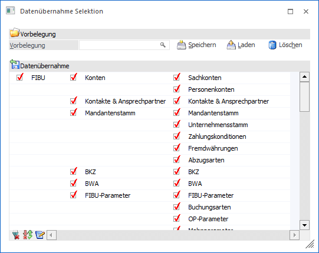
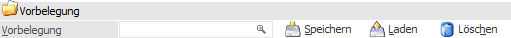
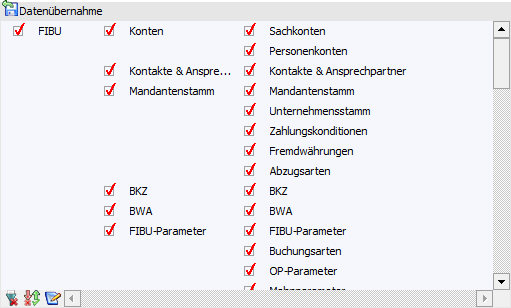
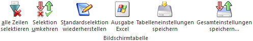
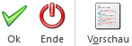
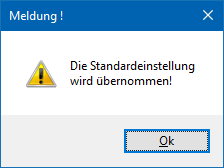

Durch die Anwahl des Buttons " Selektion" im Programm "Jahresabschluss" bzw. "Mandantenanlage" wird das Fenster "Datenübernahme Selektion" geöffnet. Dieses ermöglicht es, Daten selektiv von einem bestehenden Mandanten in einen neuen Mandanten zu Übertragen.
Hinweis
Wenn beim Jahresabschluss die Option "Kopie der Stammdaten erzeugen" deaktiviert ist, steht der Selektion-Button nicht zur Verfügung.

Vorbelegung

Ø Vorbelegung
In diesem Feld kann nach einer bereits angelegten Vorbelegung gesucht werden (durch Drücken der F9-Taste). Wurde noch keine Vorbelegung angelegt, so kann hier ein Vorbelegungstext eingetragen werden. Durch Anklicken des Buttons "Speichern" werden alle vorgenommenen Einstellungen unter diesem Text gespeichert.
Ø Speichern
Durch Anklicken des Buttons "Speichern" kann eine Vorbelegung gespeichert werden. Voraussetzung dafür ist, dass im Feld "Vorbelegung" ein Text, unter dem die Vorbelegung gespeichert werden soll, eingetragen wurde.
Ø Laden
Durch Anklicken des Buttons "Laden" kann eine bereits gespeicherte Vorbelegung geladen werden. Die Vorgangsweise ist hierbei wie folgt:
ü Im Feld "Vorbelegung" wird die gewünschte Vorbelegung eingetragen oder durch Drücken der F9-Taste nach einer bereits gespeicherten Vorbelegung gesucht.
ü Wenn anschließend der Button "Laden" angewählt wird, so wird die gespeicherte Einstellung in die Tabelle "Datenübernahme" übernommen.
Ø Löschen
Durch Anklicken des Buttons "Löschen" kann eine bereits angelegte Vorbelegung wieder gelöscht werden.
Tabelle "Datenübernahme"

Aus der Tabellen können jene Datenbereiche ausgewählt werden, welche in den neuen Mandanten übernommen werden sollen. Je nach Ausgangsprogramm (Jahresabschluss bzw. Mandantenanlage) werden hierbei unterschiedliche Standardselektionen angeboten (nähere Informationen entnehmen Sie bitte den Kapiteln Datenübernahme Selektion - Jahresabschluss bzw. Datenübernahme Selektion - Mandantenanlage).
Tabellenbuttons

Ø alle Zeilen selektieren
Durch Anklicken des Buttons "alle Zeilen selektieren" werden alle Datenbereiche markiert und somit werden alle Datenbereiche in den neuen Mandanten übernommen.
Ø Selektion umkehren
Durch Anklicken des Buttons "Selektion umkehren" wird die Selektion ins Gegenteil verkehrt. D.h. alle aktiven Checkboxen werden inaktiv gesetzt und alle inaktiven Checkboxen werden aktiv gesetzt.
Beispiel
Beim Jahreswechsel sollen nur die Sachkonten und die BKZ übernommen werden. Zuerst wir der Button "alle Zeilen selektieren" angeklickt. Dann werden die Datenbereiche "Sachkonten" und "BKZ" deaktiviert. Wenn anschließend der Button "Selektion umkehren" angeklickt wird, sind nur noch diese beiden Datenbereiche aktiviert.
Ø Standardselektion wiederherstellen
Durch Anklicken dieses Buttons werden die Standardeinstellungen vorgeschlagen.
Ø Ausgabe Excel
Durch Anwahl des Buttons "Ausgabe Excel" wird der Inhalt der Tabelle an Microsoft Excel übergeben.
Ø Tabelleneinstellungen speichern
Die Spalten einer Tabelle können grundsätzlich an beliebige Positionen verschoben, bzw. in der Breite entsprechend angepasst werden. Durch Anwahl des Buttons "Tabelleneinstellungen speichern" werden die Einstellungen benutzerspezifisch gespeichert und bei dem nächsten Aufruf des Programmpunktes wieder vorgeschlagen.
Ø Gesamteinstellungen speichern
Im Gegensatz zu "Tabelleneinstellungen speichern" können mit "Gesamteinstellungen speichern" mehrere Tabellenaufbauten gespeichert und nach Wunsch geladen werden. Zusätzlich werden Sonderfunktionen der Tabelle (z.B. "Spalte gruppieren") ebenfalls bei der Speicherung bedacht.
Buttons

Ø Ok
Durch Anklicken des Buttons "Ok" bzw. der Taste F5 werden die Einstellungen übernommen und der Jahreswechsel bzw. die Mandantenanlage kann durchgeführt werden.
Ø Ende
Durch Anwahl des Buttons "Ende" bzw. der Taste ESC werden alle Änderungen verworfen und die Standardeinstellungen übernommen und folgende Meldung am Bildschirm angezeigt:

Wird diese Meldung durch Drückern der Return-Taste bestätigt, wird der Jahreswechsel bzw. die Mandantenanlage mit den Standardeinstellungen durchgeführt.
Ø Vorschau
Durch Anklicken des Buttons "Vorschau" wird eine Liste alle Datenbereiche am Bildschirm angezeigt. Die Datenbereiche, die schwarz dargestellt werden, werden übernommen. Die Datenbereiche, die rot dargestellt werden, werden nicht in den neuen Mandanten übernommen.